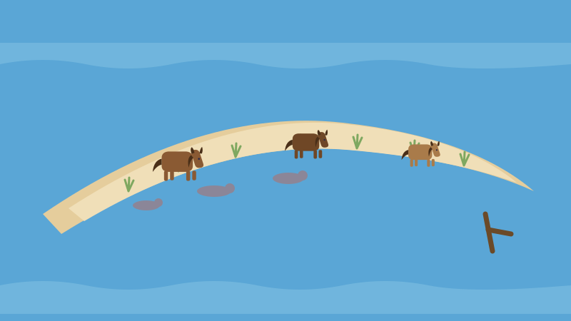
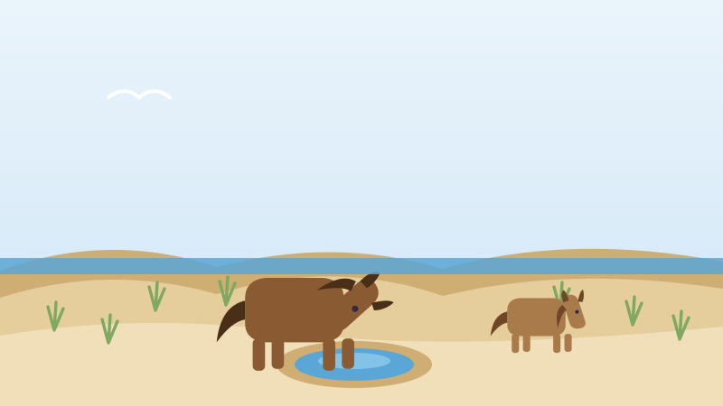

🐴 Pour les enfants
Un banc de sable dans l'océan, plein de chevaux sauvages
Il existe au large de la Nouvelle-Écosse une île faite uniquement de sable, sans arbres, sans routes et sans magasins, et environ quatre cent vingt chevaux sauvages y vivent.

Une île faite de sable
L'île de Sable se trouve dans l'océan Atlantique, à environ 160 kilomètres du point le plus proche de la Nouvelle-Écosse et à environ 290 kilomètres de Halifax. Elle mesure 42 kilomètres de long et seulement environ 1,3 kilomètre à son point le plus large.
Dessinez cela sur papier et vous obtenez un mince croissant, comme une rognure d'ongle au milieu de la mer. Elle a la forme d'un croissant de lune, et elle est faite de sable, de part en part.
Aucun arbre indigène n'y pousse. Le vent, le sel et le sable en mouvement rendent l'endroit beaucoup trop dur pour qu'un arbre s'installe. Ce qui pousse plutôt, c'est une herbe de plage résistante, l'ammophile, qui retient les dunes avec ses racines.
L'île ne garde même pas la même forme. Le sable s'en envole à l'automne et les vagues le rendent au printemps. Une extrémité s'élargit tandis que l'autre raccourcit.
D'où viennent vraiment les chevaux
Presque tout le monde vous dira que les chevaux ont nagé jusqu'au rivage après des naufrages. C'est une magnifique histoire. Ce n'est pas ce qui s'est passé.
Parcs Canada rapporte qu'un pasteur de Boston nommé Andrew LeMercier a déposé des chevaux sur l'île exprès, en 1737 et 1738. Puis, quelque temps après 1755, un armateur de Boston appelé Thomas Hancock y a expédié d'autres chevaux. Ces chevaux avaient été pris à des familles acadiennes que l'on chassait de la Nouvelle-Écosse.
Les chevaux n'ont donc pas échappé à un naufrage. Des gens les y ont transportés, puis les ont laissés. Tout ce qui a suivi a dépendu des chevaux eux-mêmes.
Ils sont protégés par la loi depuis 1961. Aujourd'hui, environ 420 y vivent. Personne ne les nourrit, personne ne les brosse, et aucun vétérinaire ne vient jamais. Ils sont complètement sauvages, et c'est voulu.
Comment boire sur un banc de sable ?
Il n'y a pas de rivière sur l'île de Sable. Il n'y a pas de ruisseau. Le sable avale la pluie si vite que l'eau ne coule jamais à la surface du sol.
La pluie s'enfonce plutôt et s'accumule en dessous, flottant au-dessus de l'eau salée comme une couche d'eau douce prise dans une éponge. À l'extrémité ouest, elle remonte à la surface en étangs, et les chevaux y boivent.
À l'extrémité est, il n'y a pas d'étangs. Alors les chevaux creusent. Ils font de petits trous dans le sable avec leurs sabots jusqu'à ce que l'eau douce s'y infiltre, puis ils boivent au puits qu'ils viennent de faire.
Ils mangent surtout de l'ammophile, avec d'autres herbes et même des algues. C'est une maigre pitance, et c'est pour cela que les chevaux de l'île de Sable sont petits, trapus et hirsutes.

Le cimetière de l'Atlantique
Une île de sable longue et basse, posée exactement là où passent les routes maritimes, est une chose terrible à rencontrer dans le brouillard. Les marins pouvaient être presque dessus avant de l'apercevoir.
Plus de 350 navires y ont fait naufrage depuis 1583. On l'a appelée le cimetière de l'Atlantique. Une seule journée, le 27 septembre 1812, trois navires s'y sont échoués en même temps, et les équipages ont attendu deux semaines avant d'être secourus.
Le sable bouge sans cesse, et de temps à autre il découvre quelque chose. En mai 2025, des archéologues ont dégagé une épave que l'on croit être l'un de ces trois navires, le sloop Swift, plus de deux cents ans après son naufrage.
Qui d'autre y vit
Les chevaux ne sont pas seuls. Chaque hiver, des phoques gris s'échouent sur les plages pour mettre bas, et c'est la plus grande pouponnière de phoques gris au monde. Plus de 80 000 blanchons y naissent en une saison. Au début des années 1960, il y en avait une centaine.
Un petit oiseau brun, le bruant des prés d'Ipswich, ne niche presque nulle part ailleurs au monde. Et il y a une minuscule abeille de cinq millimètres, l'halicte de l'île de Sable, qui vit ici et absolument nulle part ailleurs sur Terre.
En 2013, toute l'île est devenue la réserve de parc national de l'Île-de-Sable, gérée par Parcs Canada. On peut la visiter, mais seulement pendant la saison estivale, seulement pour la journée, seulement avec une autorisation, et il n'y a nulle part où camper.
C'est un parc national d'un genre étrange : un endroit protégé surtout parce qu'on le laisse tranquille.
Des mots à connaître
- Banc de sable
- Une longue crête de sable formée par la mer.
- Ammophile
- Une herbe de plage résistante dont les racines retiennent les dunes de sable.
- Naufrage
- Un navire coulé ou brisé, souvent sur des rochers ou du sable.
- Réserve de parc national
- Un endroit que tout le pays s'entend pour protéger et laisser tranquille.
Essaie maintenant trois questions
Pas de chronomètre et aucune note à craindre. Chaque réponse t'explique pourquoi.
À propos de ce quiz
Cette histoire explique où se trouve l'île de Sable et de quoi elle est faite, l'histoire documentée de l'arrivée de ses chevaux sauvages au XVIIIe siècle plutôt que la célèbre légende du naufrage, comment les chevaux trouvent de l'eau douce sur un banc de sable sans ruisseaux, pourquoi on appelle l'île le cimetière de l'Atlantique, et les phoques gris, oiseaux et abeilles qui y vivent.
Elle est écrite en phrases courtes pour les enfants de six à neuf ans, avec une image dessinée pour ce site et trois questions à la fin. Touchez le bouton de lecture à voix haute et la page lira les questions à haute voix.